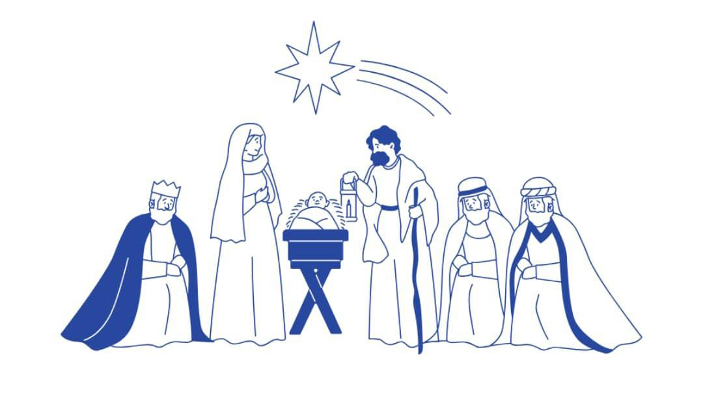

Gran Pesebre Viviente Comunitario
Llega el momento más especial del año. Este fin de semana, toda la comunidad de Acción Católica, junto a los grupos de Catequesis y Confirmación, representarán el nacimiento de Jesús.
Será una noche llena de emoción, música y fe para preparar nuestros corazones antes de Navidad. No te pierdas los actos preparados por los chicos y el mensaje final para el barrio.